01
תוצאה טבעית, לא מנותחת
התמחות בניתוחים עדינים עם מראה טבעי וחיוני. שינוי קטן במראה שמחזיר ביטחון גדול, בלי לאבד את הזהות האישית שלכם.
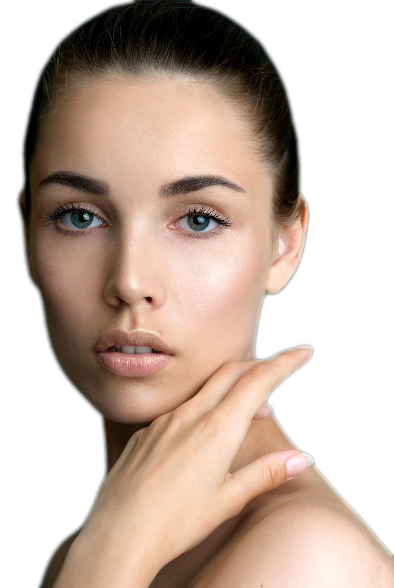
“בחרתי בכירורגיה פלסטית מאחר וזה התחום היחידי שבו אתה בוחר להינתח, ולא מאין ברירה.” ד״ר ביאדר בלאל, מומחה בכירורגיה פלסטית
מגע עדין, ראייה אסתטית אנושית, ותהליך שמכבד את מי שאתם, לא רק את מה שתרצו לשנות.
התמחות בניתוחים עדינים עם מראה טבעי וחיוני. שינוי קטן במראה שמחזיר ביטחון גדול, בלי לאבד את הזהות האישית שלכם.

בוטוקס וחומצה היאלורונית בידיים של מנתח פלסטי עם הבנה אנטומית עמוקה של שרירי ומבנה הפנים. ערך מוסף לפני ואחרי ניתוח.
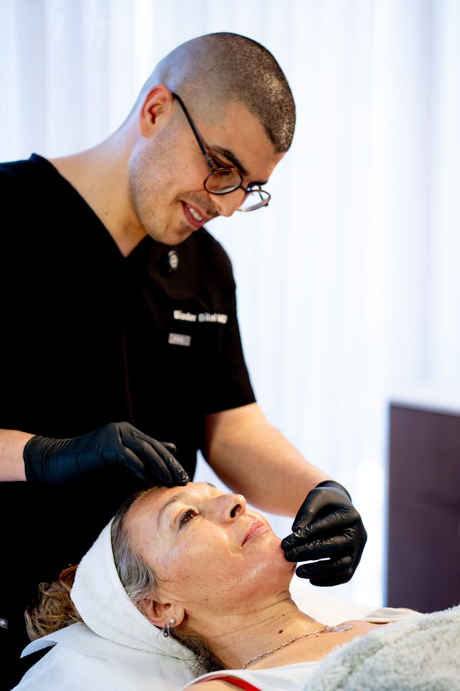
פגישת ייעוץ פתוחה שבה מאבחנים ומסבירים לעומק, בלי „לדחוף” טיפולים. פגישת הייעוץ מקוזזת כאשר נסגר ניתוח או טיפול.
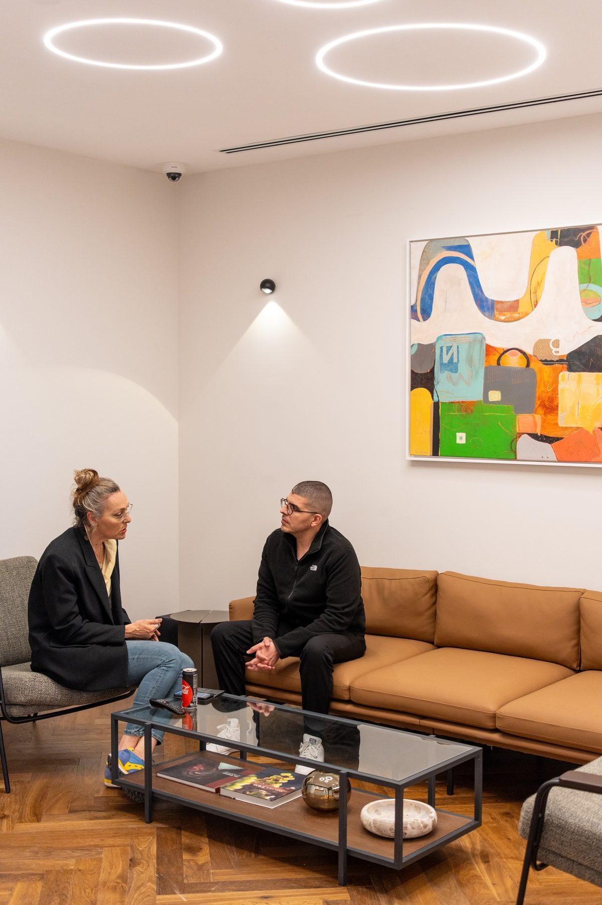
שנים של עבודה עצמאית במרפאת ד״ר וינקלר הנחשבת, לצד תת-התמחות נדירה בכירורגיה קרניופציאלית ומומים מולדים.
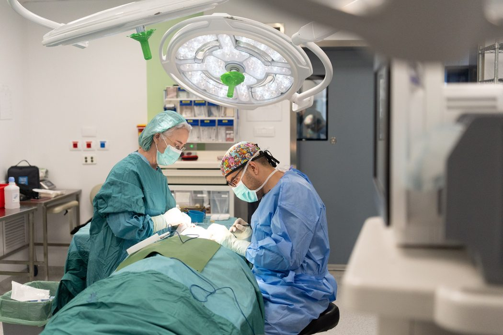
חמישה תחומים תחת קורת גג אחת: ארבעה כירורגיים, ולצידם אסתטיקה לא-ניתוחית בעין של מנתח.


דירוג ממוצע של 5.0 מתוך 222 חוות דעת מאומתות של מטופלים
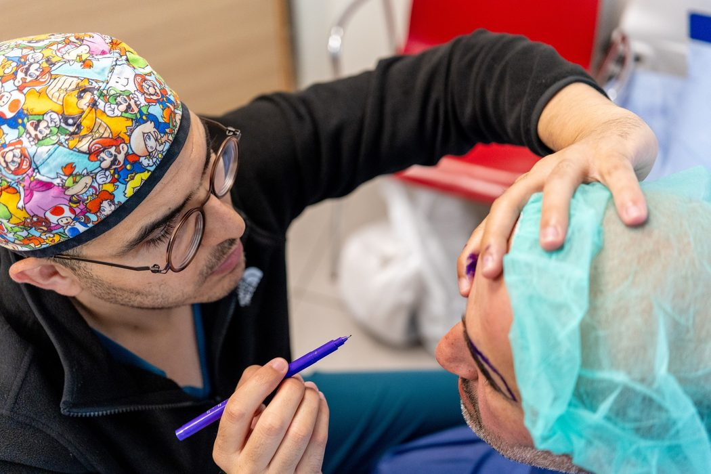
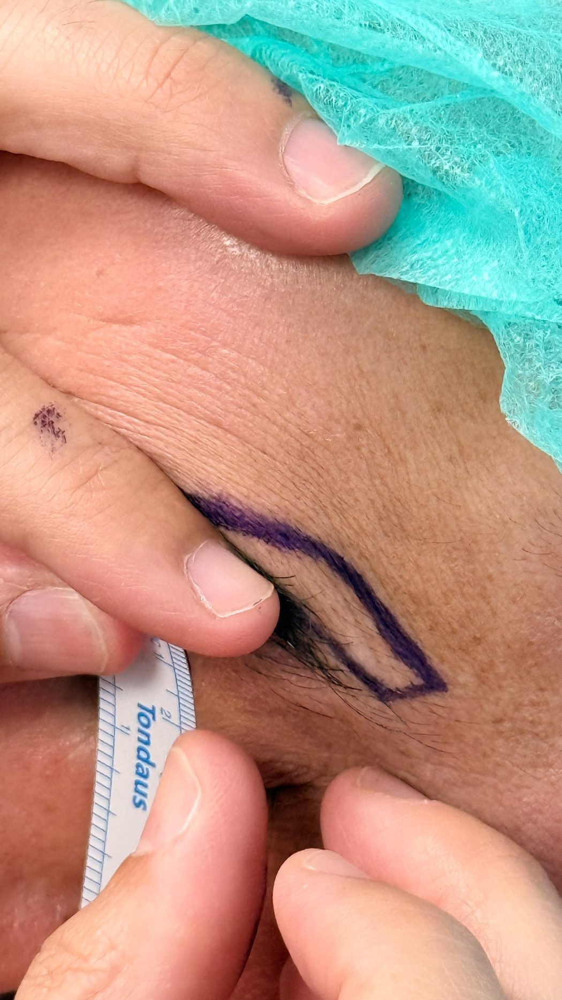
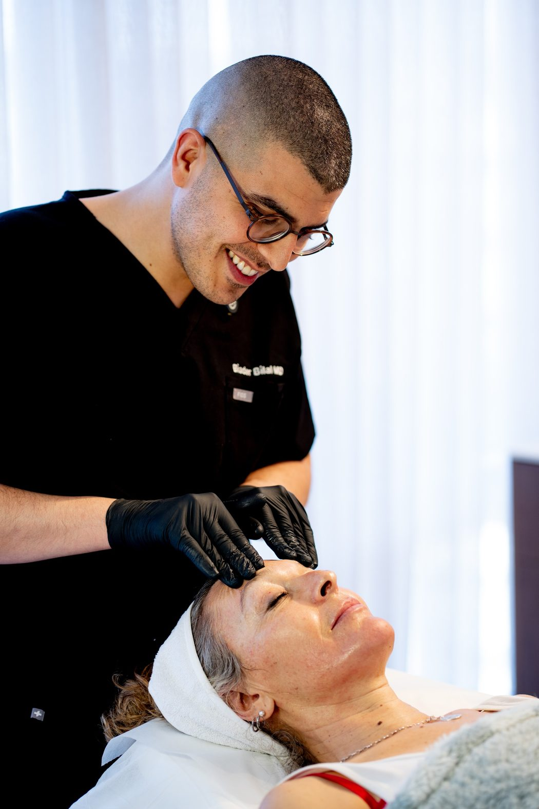
לחצו על הכפתור וגררו אותו לצדדים כדי להשוות בין המצב לפני הניתוח לבין התוצאה. ניתוח אף בגישה של ד״ר ביאדר: עדין, מדויק, וטבעי לפנים.
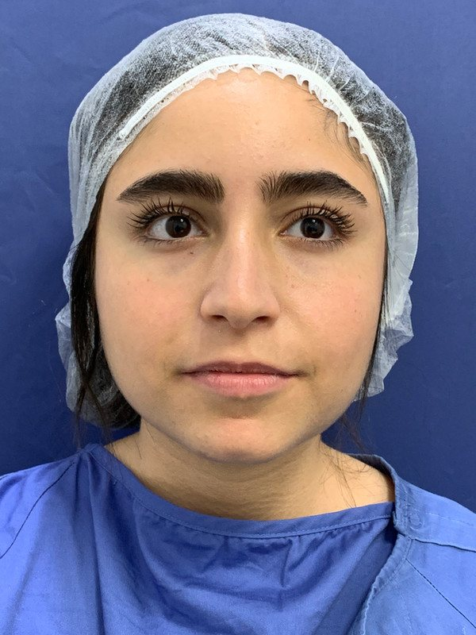
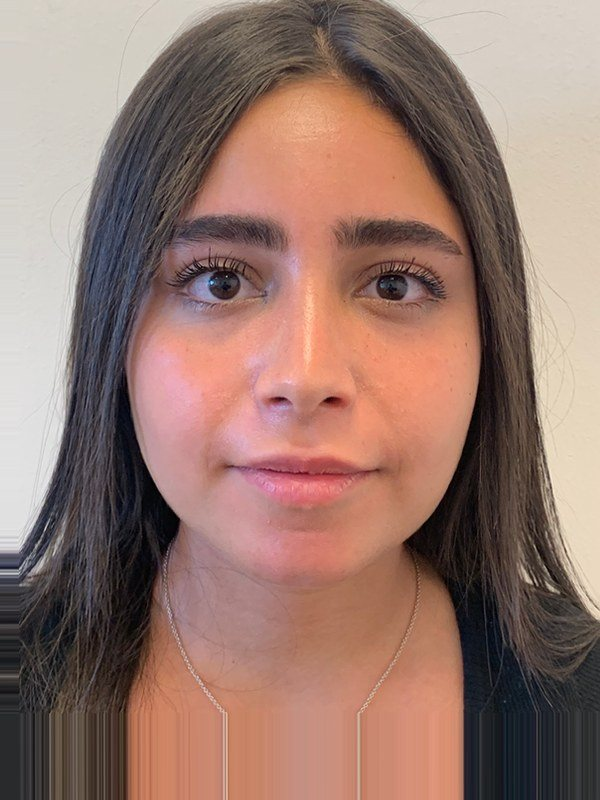
לפני אחרי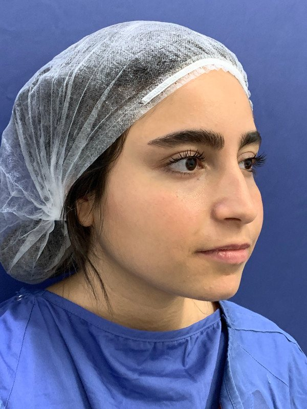
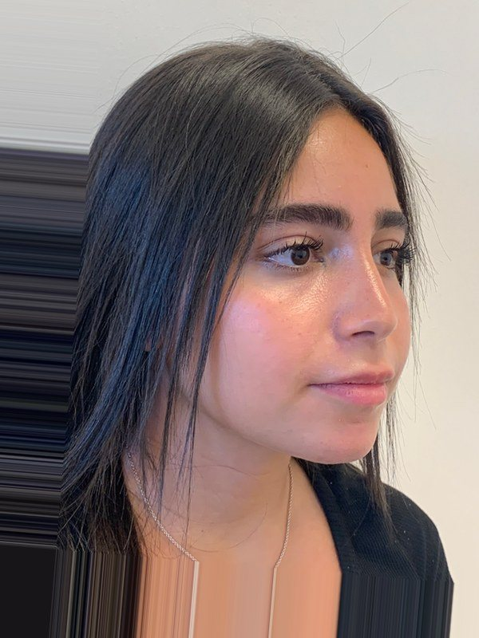
לפני אחרי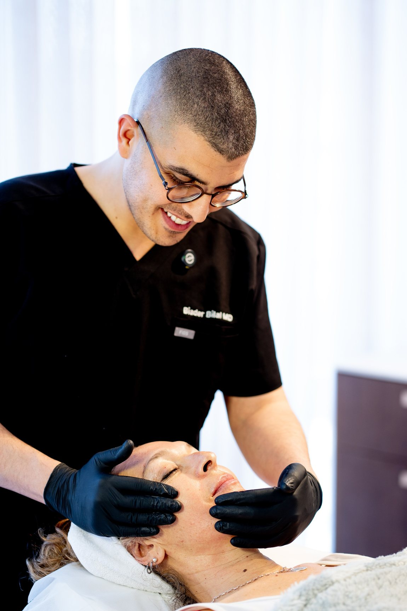
“אני מאמין שכל אדם זכאי להרגיש שלם ובטוח בגופו. כשאנחנו שלמים, אנחנו מקרינים את זה לעולם.”
מומחה בכירורגיה פלסטית, משחזרת וקרניופציאלית, עם למעלה מ-12 שנות ניסיון. יצא לעצמאות לאחר שנים של עבודה כמנתח עצמאי במרפאת ד״ר וינקלר הנחשבת, וצבר ידע וניסיון רב בדיוק האסתטי של הפנים והגוף.
לצד הפעילות האסתטית, ד״ר ביאדר מתמחה בניתוחי שפה וחך שסוע ומומים מולדים, תת-התמחות נדירה שרכש בטאיוואן. הראייה הכירורגית-אנטומית הזו היא מה שהופך כל טיפול שלו למדויק וטבעי יותר.
פגישת ייעוץ היא הצעד הראשון. נכיר, נבין מה חשוב לכם, ונבנה יחד את התהליך הנכון.